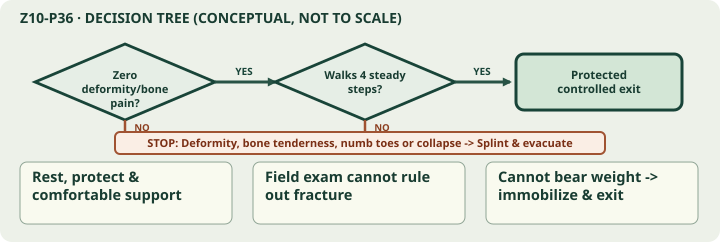

Z10-P36 · Wilderness medicine · New manuscript
Evaluate sprains and strains conservatively without ruling out hidden fractures
Support joint sprains safely while recognizing when inability to bear weight requires clinical X-ray rather than field assumptions.
When it applies · Twisted ankles, knees, or wrists without visible deformity, open wounds, or loss of circulation.
Equipment · Elastic wrap or supportive tape, cool compress/water, padded brace/pole if walking out, and dry socks.

Actions
- Halt travel promptly, inspect the joint for deformity, severe bone-edge tenderness, or numbness, and protect the joint with rest, gentle comfortable compression wrap (never tight), and elevation when resting.[M10, M09]
- Remember that severe sprains and hairline/undisplaced fractures feel identical in the field—only a clinical X-ray can rule out a fracture; never force a traveler to walk on a joint that buckles or cannot bear weight.[M10, M09]
- Check distal warmth, color, and toe/finger sensation repeatedly after wrapping, and plan an assisted exit or SAR call if the terrain or pain prevents safe weight-bearing.[M10, M09, T06]
Failure recognition · Assuming a massively swollen ankle is "just a sprain" and marching five downhill miles on an undisplaced fibula fracture.[M10, M09]
Verify · Confirm CSM remains intact below any wrap, bony-edge tenderness was noted, and exit mode matches actual safe mobility.[M10, M09]
Stop or change course · Visible deformity, bone-point pain, numbness, cold toes, or inability to take four controlled weight-bearing steps requires immobilization and non-weight-bearing evacuation.[M10, M09]
Evidence and editorial notes
- M09 · NIH / MedlinePlus · Fractures (current web edition)
- Section: Suspected Fracture Stabilization and Neurovascular Checks · Conditions: Suspected limb fracture, deformity, or inability to bear weight
Support: Immobilize the injured limb in the position found using padded support without attempting to straighten visibly deformed bones; check circulation, sensation, and movement beyond the injury and arrange evacuation.
Limitations: Open fractures (bone breaking skin) and femur/pelvis injuries carry high bleeding and infection risk requiring urgent EMS. · Conflicting evidence: None; forbids lay fracture reduction in routine field care.
Editorial note: Anchors splinting, neurovascular checks, and evacuation urgency in Z10. · Specialist reviewer: Orthopedics and wilderness medicine
Primary source · checked 2026-11-24 - M10 · NIH / MedlinePlus · Sprains and Strains (current web edition)
- Section: Soft-Tissue Sprain/Strain Care and Mobility Decisions · Conditions: Ankle, knee, or wrist sprains without deformity or open wound
Support: Rest the joint, support with comfortable stabilization, protect from further load, and evaluate whether the patient can safely self-evacuate or requires extraction; persistent inability to bear weight warrants clinical imaging.
Limitations: Severe sprains and undisplaced fractures cannot be reliably distinguished without X-ray. · Conflicting evidence: None; treats field assessment as functional evacuation triage, not diagnosis.
Editorial note: Prevents walking on unstable fractures under the assumption of a mild sprain. · Specialist reviewer: Sports and wilderness medicine
Primary source · checked 2026-11-24 - T06 · NPS · Outdoor Emergency Plan (current web edition)
- Section: If you get lost or hurt; call for help · Conditions: Outdoor US emergency
Support: Communicate location, last known point, situation and needs. Stay put when unable to establish a safe route unless immediate danger requires movement.
Limitations: Cell signal is unreliable in backcountry terrain; pre-trip plans bridge communication gaps. · Conflicting evidence: None; core lost-person decision rule.
Editorial note: Foundation for stay/signal/move and dispatch handoff cards. · Specialist reviewer: Search and rescue
Primary source · checked 2026-11-24
Source lineage · NIH MedlinePlus Sprains and Strains; new manuscript · Classification · New manuscript.